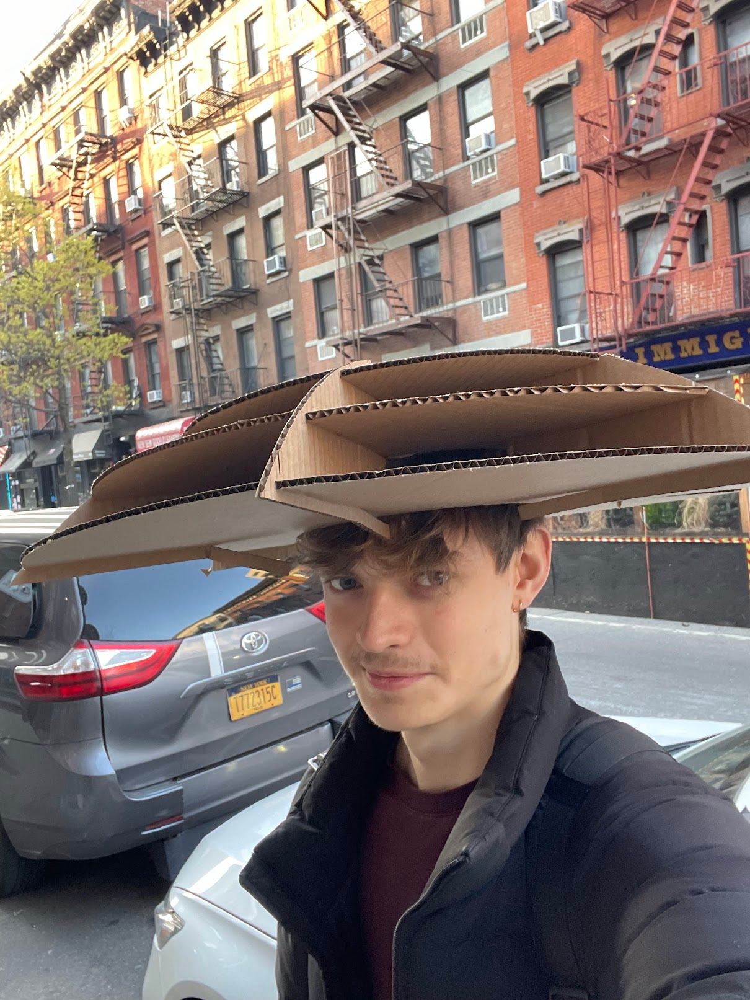

I am a Mechanical Engineer with a broad skillset that spans mechanical and electrical design, fabrication and controls.
I have been working on electromechanical systems for 10 years across robotics, vehicles and battery design. I consider myself a generalist (or gearhead / sparky / code monkey).
This portfolio site is very much a work in progress. I just finished setting it up (4-19-2026) after my old one died. Tried to fill all the galleries on each page, but still working on rewriting the content.